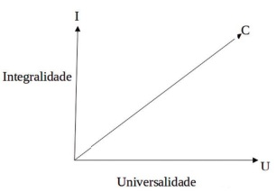
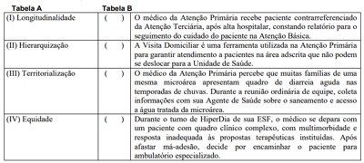

O princípio do SUS que possibilita a maior parte da judicialização dos custos envolvidos na assistência à saúde é o da:

A integralidade.
B equidade.
C universalidade.
D participação popular.
E hierarquização.
Uma das principais ações no enfrentamento da pandemia de Covid-19 foi a implementação da vacinação. No Brasil, a primeira dose foi aplicada em 17/01/2021, iniciando por pessoas com risco elevado para forma grave da doença. A elaboração do calendário vacinai considerando os grupos prioritários foi uma decisão pautada no seguinte princípio do Sistema Único de Saúde:
Como corolário do movimento da Reforma Sanitária, a Constituição Federal de 1988 definiu três grandes referenciais para o sistema de saúde brasileiro: o conceito ampliado de saúde; a saúde como direito do cidadão e dever do Estado e a instituição do SUS. Esse sistema, calcado nos princípios de universalidade, integralidade, descentralização e participação da comunidade, foi resultado de um intenso movimento social, que teve como objetivo construir um sistema universal de saúde para o país. São princípios que nortearam a reforma: I - Princípio ético-normativo, que insere a saúde como parte dos direitos humanos. II - Princípio científico, que compreende a determinação social do processo saúde/doença. III - Princípio político, que assume a saúde como direito universal inerente à cidadania em uma sociedade democrática. IV - Princípio sanitário, que entende a proteção à saúde de forma integral, desde a promoção, passando pela ação curativa até a reabilitação. Estão CORRETAS as afirmativas:
Analise as três situações abaixo: I - Casal oriundo da Venezuela instala-se no Brasil e estabelece moradia no estado de Roraima. A mulher está grávida e passa a ter seu acompanhamento pré-natal feito em uma Unidade Básica de Saúde próxima de sua casa. II - Idoso com problemas de acuidade visual é avaliado na Atenção Primária à Saúde e é suspeitado o diagnóstico de catarata. Ele, então, é encaminhado ao centro de especialidades médicas, passa por consulta oftalmológica e tem seu diagnóstico de catarata confirmado. Está com cirurgia de facoemulsificação agendada para daqui a três semanas. III - Em razão do período de colheita do café, de forma a facilitar o acesso dos trabalhadores nela envolvidos, os pro ssionais de uma Unidade Básica de Saúde que apresenta mais da metade da população adscrita empregada na lavoura cafeeira, decide ampliar o horário de funcionamento da unidade, abarcando parte do período noturno três vezes na semana. Assinale a alternativa que contém os três princípios doutrinários do Sistema Único de Saúde (SUS) que foram empregados em cada uma das situações descritas:
De acordo com
Homem de 56 anos, residente no Município de São Paulo, comparece à UBS, localizada na área de abrangência onde reside sua lha, devido a sintomas respiratórios, febre, tosse e coriza. Na recepção, informam-no que a demanda de atendimento está elevada e, como ele não reside no território sob responsabilidade da UBS e não é idoso, não é prioritário no atendimento e deve comparecer ao AMA, localizado a três quarteirões do local. Considerando os princípios filosóficos do SUS, assinale a alternativa correta.
No território sob responsabilidade sanitária de uma UBS na zona sul Município de São Paulo, uma equipe de ESF identi ca problemas relacionados a saneamento básico. Boa parte da população usa água de poço, pois não possui acesso à água encanada e tratada, gerando muitos casos de gastroenterites. Uma das ACS mobiliza a população para participar da reunião do Conselho Gestor da Unidade, para tentar solucionar o problema. De acordo com os princípios organizacionais do SUS, assinale a alternativa sobre o Conselho Gestor:
Revisar: possível letra faltando em enunciado
Em reunião da equipe amarela na UBS, a enfermeira relata que está preocupada com a falta de noti cação para tuberculose na área de abrangência desta equipe, visto ser uma área extremamente vulnerável, onde a maioria da população reside em moradias com 5 a 10 moradores em um ou dois cômodos. Solicita aos ACS que intensi quem as ações no território voltadas à tuberculose e agenda uma data na semana para realizar busca ativa de sintomáticos respiratórios, com orientações e o fornecimento de kit para coleta de escarro. A médica da equipe aproveita a fala e reforça a necessidade de ações na comunidade voltadas para a prevenção de sí lis, visto o aumento expressivo de casos em adolescentes. Fica acordado, então, que ações serão realizadas no território da equipe, neste momento, priorizando os dois agravos. Uma ACS propõe também que um grupo sobre sexualidade seja implementando na unidade, além da abordagem destas temáticas nas escolas, através do Programa Saúde na Escola. Assinale a alternativa que descreve a qual atributo da Atenção Primária a Saúde (APS) o caso se refere.
A Constituição Federal estabelece que “a saúde é direito de todos e dever do Estado, garantido mediante políticas sociais e econômicas que visem à redução do risco de doença e de outros agravos e ao acesso universal e igualitário às ações e serviços para sua promoção, proteção e recuperação.” O conceito de “acesso universal e igualitário” significa que ao Estado compete atender a toda a população
O movimento da Reforma Sanitária propõe que a saúde seja um direito do cidadão e um dever do Estado e o acesso aos bens e serviços que a promovam e recuperem seja de todos. Disso resultaram duas das principais diretrizes do Sistema Único de Saúde (SUS), a
A atenção básica (primária) pode ser definida como um conjunto de ações, de caráter individual ou coletivo, situadas no primeiro nível de atenção dos sistemas de saúde, voltadas para a promoção da saúde, a prevenção de agravos, o tratamento e a reabilitação. Sobre a atenção básica e suas principais características, analise as proposições abaixo e assinale (V) para Verdadeiro ou (F) para Falso. ( ) Deve ser a porta de entrada do serviço de saúde. ( ) A continuidade do cuidado refere-se à incumbência de organizar e coordenar os cuidados, privilegiando os menos favorecidos. ( ) A integralidade é a característica responsável pelo vínculo com outros serviços de saúde e, dessa maneira, os serviços de nível primário podem lançar mão de visitas domiciliares, reuniões com a comunidade e ações intersetoriais. ( ) A coordenação do cuidado: uma vez que atendida na atenção básica, a pessoa mantém seu vínculo com o serviço de saúde ao longo do tempo e, quando uma nova demanda surge, a pessoa é atendida com mais agilidade. Assinale a alternativa que apresenta a sequência correta.
Caso um turista estrangeiro sofra um acidente por animal peçonhento na Amazônia brasileira, ele deve
Em relação à adequação da assistência pré-natal no Brasil, um estudo realizado entre 2011 e 2012 evidenciou, nas regiões Norte e Nordeste do país, uma menor adequação do pré-natal em mulheres mais jovens, de pele negra, multíparas, sem companheiro, sem trabalho remunerado, com menor escolaridade, de classes econômicas mais baixas. Outro estudo descritivo com os dados do Sistema de Informações sobre Nascidos Vivos, entre 2014 e 2015, evidenciou que o acesso ao pré-natal foi adequado para cerca de 70% das mulheres, sendo a maioria delas mulheres em idade mais avançada, escolaridade maior e de cor branca/amarela das Regiões Sul e Sudeste (DUNCAN, 2022). Diante desses estudos, o princípio do SUS que ainda aparece como um desafio é a:
O Sistema Único de Saúde (SUS) é um dos maiores e mais complexos sistemas de saúde pública do mundo, abrangendo desde o simples atendimento para avaliação da pressão arterial, por meio da Atenção Primária, até o transplante de órgãos, garantindo acesso integral, universal e gratuito para toda a população do país. Quais são seus princípios:
De acordo com Barbara Starfield (2002), corresponde aos atributos da Atenção Primária à Saúde o (a)
De acordo com o artigo 198 da CF/88, são diretrizes do Sistema Único de Saúde (SUS):
O sistema de referência e contrarreferência constitui-se na articulação entre os níveis de atenção em saúde. A contrarreferência compreende:
O Sistema Único de Saúde (SUS) segue a mesma doutrina e os mesmos princípios em todo o território nacional, sob a responsabilidade das três esferas autônomas de governo federal, estadual e municipal. Desta forma, o SUS é um conjunto de unidades, serviços e ações que interagem para um m comum, baseado em três princípios doutrinários. Assinale a alternativa que correlaciona adequadamente um destes princípios com a respectiva definição:
Sílvia é professora da rede municipal de ensino e procurou um Hospital Estadual porque pretendia consultar-se comum médico otorrinolaringologista, uma vez que se encontrava disfônica. Ela não foi atendida no hospital, apesar de haver um setor de otorrinolaringologia. Considerando os princípios e diretrizes do SUS, assinale a alternativa que melhor justi ca o ocorrido:
Revisar: possível letra faltando em enunciado
Sobre o sistema de saúde no Brasil, assinale a alternativa INCORRETA.
Maria da Conceição, 69 anos, é uma das pacientes diabéticas do seu território. Há 3 meses, você iniciou insulina, após os hipoglicemiantes orais e as orientações de mudança de estilo de vida não terem obtido o objetivo esperado. Apesar disso, dona Maria mantém os níveis glicêmicos anteriores. Durante uma visita domiciliar, você encontra a paciente saindo de um culto evangélico e percebe um certo constrangimento inesperado. Na próxima consulta, então, você aborda como as crenças podem interferir nas decisões sobre a própria saúde. Ela revela que, bem antes do início da insulina, havia combinado com o pastor que retiraria um dos remédios como prova de fé em Cristo. Assinale a alternativa correta de acordo com as características da atenção primária, segundo Starfield (2002):
Sobre os atributos da APS podemos afirmar, EXCETO:
Atenção Primária à Saúde (APS) atuando na identi cação precoce de casos graves, com o adequado manejo das pessoas com síndrome gripal (SG), está:
Mulher, 83 anos, com cardiopatia isquêmica, diabetes e catarata, vem à Unidade Básica de Saúde trazida pela vizinha com a demanda de ser novamente encaminhada para consulta com o cardiologista, pois havia perdido a marcação. A paciente não fez os exames solicitados, faltou ao procedimento agendado com o oftalmologista e desconhece a causa da sua internação em hospital terciário recentemente. O atributo da Atenção Primária à Saúde mais adequado para atender este caso é
A Atenção Primária à Saúde (APS) deve ser orientada por quatro princípios essenciais segundo Bárbara Star eld. Qual é o significado do Princípio da Integralidade na Atenção Primária à Saúde?
É diretriz da Atenção Primária em saúde:
Princípios e Diretrizes do SUS na Lei n 80801990 Um jovem de 24 anos residente no bairro do Portão jamais havia entrado numa Unidade Básica de Saúde (UBS). Certo dia, enquanto trabalhava, começou a sentir-se mal com dor abdominal, diarréia e vômito e decidiu ir à UBS. Chegou na recepção às 10h, a funcionária sorriu, cumprimentou-o com um “bom dia” e começou o atendimento. Avaliou que ele estava se sentindo muito mal e imediatamente colocou-o na agenda para consulta médica. João Paulo, um senhor usuário da UBS de longa data, havia ido solicitar consulta apenas para renovar a prescrição dos seus anti-hipertensivos e foi agendado para dali 3 dias, pois já não havia mais disponibilidade de consultas. Qual o princípio do Sistema Único de Saúde contemplado pela situação?
Durante a pandemia de SARS-CoV-2, qual foi o princípio do sistema de saúde que garantiu que todas as necessidades dos cidadãos brasileiros fossem atendidas por completo, desde demandas mais simples até as mais complexas, desde o esforço de vacinação até o suporte em UTI em hospital de referência?
No Brasil, a pandemia COVID-19 foi marcada por uma robusta expansão de leitos de internação, sobretudo leitos de UTI. Entretanto, por mais que a grande parte das pessoas acometidas pela infecção pelo SARS-CoV-2 apresenta quadros leves, pouco se avançou em relação à preparação da Atenção Primária especialmente num primeiro momento da pandemia (2020). Nesse contexto, que atributos da Atenção Primária poderiam contribuir para o cuidado destes pacientes, especialmente para os que apresentaram quadros leves?
Em um relatório de gestão, consta que 30% das Unidades de Saúde da Família de um município ofertam inserção de DIU, pequenos procedimentos cirúrgicos e eletrocardiograma. Esse percentual é superior à média dos municípios do estado, o que foi considerado positivo para a gestão. Qual atributo da Atenção Primária à Saúde foi avaliado no enunciado?
Assinale a alternativa que apresenta um dos princípios da seguridade social, segundo a Constituição Federal.
Dona Teresa, de 45 anos de idade, foi visitar os netos para as festas de m de ano. Durante a sua estadia, após o almoço familiar em uma quarta-feira, começou a sentir dores abdominais moderadas. Ela relata já ter apresentado dores abdominais antes, mas não com essa intensidade. A lha a levou na unidade de saúde de família do bairro, que era a unidade de saúde mais próxima. Dona Teresa foi acolhida pela enfermeira e passou por uma consulta com o médico de família da unidade e teve a resolução do quadro e os devidos encaminhamentos. Nessa situação hipotética, o princípio do Sistema Único de Saúde (SUS) que permitiu o atendimento na unidade local foi a(o)
A atenção primária à saúde (APS) é fundamental para a organização da rede de atenção à saúde (RAS), sendo dividida em atributos essenciais e derivados, descrita por Barbara Star eld, em 1998, “como oferta de ações de atenção à saúde integradas e acessíveis segundo as necessidades locais, desenvolvidas por equipes multipro ssionais responsáveis por abordar uma ampla maioria das necessidades individuais e coletivas em saúde, desenvolvendo uma parceria sustentada com as pessoas e comunidades”. Em relação aos atributos da APS, assinale a alternativa correta.
A Lei nº 8.080, de 1990, conhecida como a Lei Orgânica da Saúde, estabelece princípios e diretrizes norteadores do funcionamento do Sistema Único de Saúde (SUS). Pode-se afirmar, neste contexto, que:
Em setembro de 2021, a Organização Mundial da Saúde (OMS) estabeleceu uma meta global ambiciosa. A agência de saúde da ONU pediu que 70% da população global fosse vacinada até meados de 2022. Aquela altura, pouco mais de 3% das pessoas em países de baixa renda havia sido vacinadas com pelo menos uma dose, em comparação com 60-18% em países de alta renda. Seis meses depois, o mundo está longe de atingir essa meta. O número total de vacinas administradas aumentou drasticamente, mas também a desigualdade da distribuição: das 10,7 bilhões de doses distribuídas em todo o mundo, apenas 1% foi administrada em países de baixa renda. Isso significa que 2,8 bilhões de pessoas em todo o mundo ainda estão esperando por sua primeira dose. A desigualdade nas vacinas põe em risco a segurança de todos e contribui para aumentar as desigualdades entre - e dentro - dos países. Esse estado de coisas não apenas corre risco de prolongar a pandemia, mas esta desigualdade, tem muitos outros impactos, retardando a recuperação econômica de países inteiros, mercados de trabalho globais, pagamentos da dívida pública e capacidade dos países de investir em outras prioridades (Nações Unidas, março 2022). Dentre os princípios do Sistema de Saúde brasileiro, relacionados abaixo, qual deles visa atenuar as desigualdades e injustiças sociais:
Paciente do sexo feminino, 14 anos de idade, comparece à consulta com queixa de acompanhamento de cardiopatia congênita. Durante a anamnese, relatou presença de corrimento vaginal de odor fétido e coloração acinzentada. Refere também início da atividade sexual. São realizadas, além das orientações, tratamento do corrimento vaginal e proposta para iniciar uso de método contraceptivo. O atributo da Atenção Primária à Saúde exemplificado é
Em 2020, o Instituto Nacional do Câncer (INCA) estimou 40.990 novos casos e 20.245 óbitos devido ao câncer colorretal no Brasil. Embora tenham ocorrido avanços na detecção precoce em vários municípios, há falhas, desde a atenção básica, no encaminhamento de pacientes para pesquisa de sangue oculto ou colonoscopia. Mesmo após rastreados os tumores de cólon e reto, muitos pacientes têm di culdade de acessar a atenção especializada, inclusive quando há indicação de cirurgia, radioterapia ou quimioterapia. Neste caso, qual princípio do SUS está sendo ignorado?
A figura a baixo representa os vetores I, U e C referentes ao desempenho de um Sistema de Saúde, resultantes da atenção à saúde prestada de acordo com: a complexidade do problema de saúde (I=Integralidade) e sua respectiva cobertura pelo sistema (U=Universalidade). O vetor C corresponde à função de

Silvana, de 47 anos de idade, procurou o agente comunitário de saúde (ACS) de sua microárea relatando que, havia mais de um mês, não conseguia marcar consulta para mostrar os resultados dos exames solicitados pela sua médica nem conseguia consulta para sua neta de seis meses de idade, que havia perdido a última consulta de puericultura. Levadas essas demandas para a reunião de equipe, a enfermeira reconheceu que estavam deixando de cumprir dois dos atributos essenciais da atenção primária à saúde. Considerando a situação hipotética acima, assinale a alternativa que apresenta os dois atributos em questão.
Em um serviço de saúde que oferece cuidados à população coordenação da unidade, para apresentar algumas reivindicações, o que foi acolhido. Uma das reclamações dizia respeito à di culdade de marcar consultas médicas, pois os horários oferecidos eram incompatíveis com a jornada de trabalho da maioria das usuárias do serviço. A situação hipotética acima retrata a execução de um princípio organizativo do Sistema Único de Saúde (SUS) e u m problema relacionado a um princípio derivado da atenção primária a saúde. Tendo isso em visto, assinale a alternativa que apresenta, respectivamente, esse princípio organizativo do SUS e o princípio derivado em questão.
Qual dos atributos da Atenção Primária à Saúde está relacionado com a existência de uma fonte regular de atenção e seu uso ao decorrer do tempo e tem vários benefícios, tais como, menor utilização de serviços, melhor atenção preventiva, menos referenciamento de pacientes e menos hospitalizações?
A organização da Atenção Básica à Saúde (Portaria nº 2436/2017, do Ministério da Saúde) inclui a oferta de cuidado, “reconhecendo as diferenças nas condições de vida e saúde e de acordo com as necessidades das pessoas, considerando que o direito à saúde passa pelas diferenciações sociais e deve atender à diversidade”. Esta orientação está associada ao seguinte princípio do SUS:
A priorização de cirurgia reparadora de mama em pacientes com câncer de mama em relação a pacientes com gigantomastia condiz com o princípio do SUS de:
De acordo com a Carteira de Serviços da Atenção Primária à Saúde (2020), do Ministério da Saúde, algumas características da Atenção Primária à Saúde são denominadas atributos derivados. Qual é um deles?
Uma agente de saúde procura você trazendo a demanda de uma família. Ela relata que Dona Benzarina, de 102 anos, recebeu alta do hospital municipal “para morrer em casa, pois não tinham mais o que fazer por ela”. A equipe da UBS de referência não recebeu comunicação do Serviço Social do referido hospital. A família está muito angustiada, pois a paciente “está agonizando” e por isso solicita uma visita domiciliar. Assinale a alternativa que traz os termos na ordem que preenche corretamente as lacunas do texto abaixo. “A visita domiciliar é um exemplo prático do Princípio Ordinário do SUS da ________. Ao desospitalizar a paciente sem informar a equipe da APS, não houve observância ao Atributo Nuclear da Atenção Primária da __________. Ao prestar assistência a Dona Benzarina em um contexto de terminalidade, a equipe da ESF está praticando o Atributo Nuclear da Atenção Primária da ________. Diante da nitude, cuidar de Dona Benzarina significa ter sensibilidade a aspectos bioéticos, técnicos, religiosos e culturais: assim, coloca-se em prática o Atributo Nuclear da Atenção Primária da _________.
Sobre o Sistema Único de Saúde (SUS), é correto afirmar que
Princípios e Diretrizes do SUS na Lei n 80801990 O Sistema Único de Saúde (SUS), criado na 8ª Conferência Nacional de Saúde, é pautado em três grandes princípios. Analise a situação descrita a seguir. S. M. B. estava de férias em uma cidade no litoral do Brasil. Durante a realização de uma trilha, acidentou-se e teve fratura em uma das mãos. Procurou o serviço do município, que era referência para casos de trauma. Depois de algumas horas, foi atendido e teve seu problema de saúde resolvido. Assinale a alternativa que apresenta, corretamente, o princípio do SUS retratado nessa situação.
Princípios e Diretrizes do SUS a serem operacionalizados pela Atenção Básica A Constituição Federal estabelece que as ações e serviços públicos de saúde integram uma rede regionalizada e hierarquizada e constituem um sistema único, tendo como uma de suas diretrizes o atendimento integral com
Princípios e Diretrizes do SUS na Lei n 80801990 Assinale a alternativa que preencha corretamente a lacuna. O princípio da ________ justi ca a prioridade na oferta de ações e serviços aos segmentos populacionais que enfrentam maiores riscos de adoecer e morrer em decorrência da desigualdade na distribuição de renda, bens e serviços.
Revisar: possível letra faltando em enunciado
Princípios e Diretrizes do SUS na Constituição Federal O Sistema Único de Saúde – SUS é um sistema solidário, inspirado no sistema europeu de concepção universalista, pautado em diversos princípios. Desde sua criação, o SUS proporcionou a atenção integral à saúde e não apenas cuidados assistenciais e está à disposição de todos, desde a gestação e por toda a vida. De acordo com a doutrina, o princípio específico que, embora ligado ao princípio da igualdade, consiste na necessidade de atendimento das demanda sem saúde de acordo com a vulnerabilidade social dos usuários, buscando oferecer mais a quem mais precisa e com isso reduzir as desigualdades sociais é denominado princípio da:
De acordo com STARFIELD (2002) os atributos exclusivos (essenciais) da Atenção Primária à Saúde (APS) são:
Marque a alternativa CORRETA:
A Política Nacional da Atenção Básica (PNAB) foi instituída pela Portaria nº 2.436, de 21 de setembro de 2017 e define a organização em Redes de Atenção à Saúde (RAS) como estratégia para um cuidado integral e direcionado às necessidades de saúde da população. Sobre PNAB, é CORRETO afirmar:
Dentro da organização dos sistemas de saúde, a Atenção Primária a Saúde (APS) atua como nível assistencial e possui alguns atributos, que nada mais são que características operacionais exclusivas dos serviços prestados nesse nível. Sobre os atributos da APS, marque verdadeiro (V) ou falso (F). ( ) Universalidade, equidade, integralidade, hierarquização, descentralização e controle social são atributos da APS. ( ) Um de seus atributos é ser o primeiro contato, a porta de entrada ao sistema, para isso deve-se garantir acessibilidade aos serviços de saúde. ( ) A acessibilidade aos serviços de saúde possui 2 aspectos: acesso geográfico e acesso sócio organizacional. ( ) A integralidade não é atributo da APS. ( ) A coordenação do cuidado é um atributo da APS e as ferramentas de referência e contra referência auxiliam nesta coordenação. Assinale a sequência CORRETA:
Paciente de 45 anos, hipertenso e diabético há dez anos, comparece na Unidade de Pronto Atendimento, com quadro de acidente vascular cerebral, sendo classificado como vermelho pelo Protocolo Manchester. O princípio doutrinário do SUS que está sendo observado pelo Protocolo de Manchester é:
Na Lei 8.080 de 1990, capítulo II, Art. 7º, está descrito que as ações e os serviços públicos de saúde que integram o Sistema Único de Saúde devem obedecer ao seguinte princípio: “a assistência à saúde deve ser sem preconceitos ou privilégios de qualquer espécie”. Este princípio refere-se à
A di culdade com a contrarreferência especializada figura-se entre as principais queixas da Atenção Primária em Saúde
O Sistema Único de Saúde (SUS) obedece a um conjunto de princípios que compõem sua loso a. Assinale a alternativa INCORRETA, considerando os princípios de organização do SUS.
Um paciente venezuelano, que cruzou a fronteira do país sem a autorização do governo, buscou apoio em hospital brasileiro por dor torácica. Previamente já com dois infartos agudos do miocárdio prévio, compareceu sudoreico, diaforético e relatando dor semelhante aos quadros prévios. Um brasileiro que estava na la de espera por queixa de pirose e regurgitação, sem sinais de alarme, reclamou do estrangeiro, que deveria obedecer à la de espera para ser atendido. O enfermeiro da triagem manteve o atendimento preferencial ao venezuelano, levando-o à sala de emergência. Conforme os princípios éticos e doutrinários do SUS, assinale a opção que contemple corretamente dois deles citados.
De acordo com a Lei nº 8.080/1990 - SUS, as ações e os serviços públicos de saúde e os serviços privados contratados ou conveniados que integram o Sistema Único de Saúde (SUS) devem obedecer, entre outros, aos seguintes princípios: I. Igualdade da assistência à saúde, sem preconceitos ou privilégios de qualquer espécie. II. Preservação da dependência das pessoas na defesa de sua integridade física e moral. III. Utilização da epidemiologia para o estabelecimento de prioridades, a alocação de recursos e a orientação programática. Está(ão) CORRETO(S):
Os princípios do Sistema Único de Saúde (SUS) constituem as bases para o funcionamento e a organização da assistência à saúde no Brasil. De acordo com os dados do quadro, sobre os princípios organizativos do SUS, analise os itens abaixo: I. Universalidade II. Equidade III. Regionalização e Hierarquização IV. Descentralização V. Participação popular Assinale a alternativa CORRETA.
A Atenção Primária à Saúde deve ser o primeiro contato do paciente com o sistema de saúde, oferecendo cuidado integral, podendo resolver de 80% a 90% dos problemas de saúde de uma população. Assinale a opção que não apresenta um atributo essencial da Atenção Primária, segundo a autora Barbara Starfield.
Após campanha antitabagista, as autoridades sanitárias constataram redução significativa do número de fumantes apenas entre os grupos populacionais de maior renda e escolaridade. Com base nesse fato e nos princípios do SUS, é correto afirmar que a(s):
O princípio do SUS que possibilita a maior parte da judicialização dos custos envolvidos na assistência à saúde é o da:
Princípios e Diretrizes do SUS na Lei n 80801990 No que diz respeito aos serviços de atenção primária e aos serviços de atenção secundária, assinale a alternativa correta.
O conjunto articulado e contínuo das ações e serviços preventivos e curativos, individuais e coletivos, exigidos para cada caso em todos os níveis de complexidade do sistema refere-se a um dos princípios do Sistema Único de Saúde (SUS). Trata-se do princípio da
Princípios e Diretrizes do SUS na Lei n 80801990 Homem, 58 anos de idade, residente do pequeno município onde você trabalha, vinha em acompanhamento por hipertensão arterial sistêmica e diabetes mellitus há vários anos. Passou a apresentar angina recorrente, sem melhora com medicações prescritas por você e foi encaminhado a acompanhamento cardiológico ambulatorial em uma cidade vizinha, onde foi atendido e realizou teste ergométrico e ecocardiograma. Alguns meses depois, sofreu infarto agudo do miocárdio e foi encaminhado ao hospital cardiológico na capital do estado para realização de cineangiocoronariogra a, onde cou internado e realizou cirurgia de revascularização miocárdica, devido a obstrução coronariana grave. Qual dos princípios do SUS está sendo aplicado no atendimento do paciente do caso acima?
O princípio do Sistema Único de Saúde que possibilita que o atendimento a um cidadão com neoplasia de pênis seja priorizado em relação a outro que gostaria de realizar inserção de prótese peniana eletiva é o do(da)
Paciente feminina, 83 anos, acamada com sequela de Acidente Vascular Cerebral há 2 anos, reside próximo de uma Unidade Básica de Saúde da Família (UBSF). Na visita domiciliar de rotina do Agente Comunitário de Saúde (ACS), a lha relata que a mãe vem apresentando febre há 1 dia, falta de apetite e diminuição da urina. Na reunião da Equipe na UBSF, no nal da manhã do mesmo dia, o ACS relata o caso e uma visita domiciliar foi agendada com o médico e a enfermeira da equipe para o período da tarde. Que princípio doutrinário do SUS está sendo garantido no atendimento domiciliar da paciente?
Paciente masculino, 61 anos, foi atendido pelo médico da UBSF do seu bairro, relatando ter notado ""estrias de sangue nas fezes"" há três dias. Refere que houve mudança no seu hábito intestinal, com diarreias alternando com obstipação intestinal e que vem perdendo peso há três meses. Perguntado sobre doenças na família, referiu que o pai faleceu de ""câncer no intestino"". O médico solicitou hemograma, pesquisa de sangue oculto nas fezes, colonoscopia e o encaminhou para marcar os exames. Após quatro meses, o paciente retorna à Unidade de Saúde referindo que o sangramento anal aumentou, que sente muita fraqueza, perda de apetite e que teve um emagrecimento acentuado. O mesmo médico o atendeu e a conversa entre os dois foi assim: DOUTOR: - Bom dia. O Sr. realizou os exames que eu te pedi? PACIENTE: - Bom dia, doutor! Eu não fiz ainda. DOUTOR: - Como não fez? Assim não dá! Como vou saber o que o senhor tem? PACIENTE: - Desculpa, doutor! A culpa não foi minha. Marcaram os exames para daqui a seis meses, e eu só piorando. DOUTOR: - Infelizmente, sem os resultados dos exames não posso fazer nada. PACIENTE: - Paciência, né doutor, paciência. Vamos aguardar. Quem sabe Deus dá um jeitinho. Muito obrigado! Assim que conseguir os exames eu volto. Ao ler esta história ctícia, mas que acontece todos os dias em grande parte dos serviços de saúde do Brasil, qual a diretriz da Política Nacional de Atenção Básica que não foi levada em conta pelo médico e pela equipe de saúde da UBSF?
Princípios e Diretrizes do SUS na Constituição Federal Sobre os princípios doutrinários e éticos do SUS, assinale a opção correta:
A Organização Mundial da Saúde define a Atenção Primária à Saúde como “A atenção essencial à saúde, baseada em métodos práticos, cienti camente evidentes e socialmente aceitos e em tecnologias tornadas acessíveis a indivíduos e famílias na comunidade por meios aceitáveis e a um custo que as comunidades e os países possam suportar, independentemente de seu estágio de desenvolvimento, num espírito de autocon ança e autodeterminação. Ela forma parte integral do sistema de serviços de saúde do qual representa sua função central e o principal foco de desenvolvimento econômico e social da comunidade.” Assinale a alternativa que cita os princípios da atenção primária
Município da zona norte de Sergipe, desprovido de hospital regional, costuma mandar pacientes, em transporte coletivo, para serem atendidos em Arapiraca. Uma parte desses pacientes necessita de atendimento ambulatorial especializado; outros têm complexidade que indica internamento hospitalar. O nanciamento desses atendimentos no SUS implica em definições complexas e inter articuladas já que cada município recebe financiamento proporcional à sua população adstrita. Indique os Princípios Gerais que permitem a solução do impasse descrito no caso, a partir da pactuação dos gestores locais:
A atenção primária à saúde como estratégia de organização do sistema de atenção à saúde implica obedecer a certos atributos e desempenhar algumas funções. O atributo referente à existência do aporte regular de cuidados pela equipe de saúde e seu uso consistente ao longo do tempo é denominado:
As situações a seguir são exemplos dos atributos da APS. Assinale a situação que representa a coordenação de cuidados.
A quali cação das ações da Atenção Primária à Saúde se dá pela presença dos Atributos Derivados da APS. Assinale alternativa que apresente somente esses atributos:
Atributos gerais da Atenção Primária à Saúde APS Uma paciente de 72 anos de idade possui diagnóstico de osteoporose há um ano, em tratamento, e histórico de fratura de quadril há cerca de sete meses. Procurou atendimento na equipe Estratégia Saúde da Família (ESF) por ter apresentado torção do tornozelo direito em sua caminhada matinal, com queixa de intensa dor local e di culdade para deambular. Ao exame físico, demonstra dor à palpação, limitação da movimentação articular e discreto edema local. Tendo em vista esse caso clínico e os conhecimentos médicos correlatos, julgue o item a seguir. É de grande importância continuar o acompanhamento dessa paciente, em vistas de manter a longitudinalidade do atendimento.
Atenção Primária a proporciona à população sem distinção de gênero, doença, ou sistema orgânico.” É atributo nuclear da atenção primária à saúde
Na USF São Joaquim, a equipe em reunião decidiu iniciar a campanha de combate à hipertensão e ao diabetes nas cinco microáreas da área de atuação. Três microáreas eram bem favorecidas socioeconomicamente, com a maioria dos moradores usufruindo de plano de saúde, enquanto duas eram bastante desfavorecidas e desassistidas. A equipe optou então por iniciar o trabalho de busca ativa nestas duas microáreas. O princípio do SUS contemplado foi o da
Atributos gerais da Atenção Primária à Saúde APS O TRABALHO DOS PROFISSIONAIS DE EQUIPE DE SAÚDE DA FAMÍLIA É CARACTERIZADO PELOS SEGUINTES ATRIBUTOS ESSENCIAIS DA ATENÇÃO PRIMÁRIA EM SAÚDE:
Os atributos da APS representados como “a atenção a todos os problemas e contexto em que a pessoa está inserida” e “entender e valorizar a cultura e hábitos que a população adscrita, de forma a facilitar a relação com as pessoas” são, respectivamente,
Analise o trecho a seguir. “Todo cidadão brasileiro deve ter acesso às ações e serviços oferecidos pelo SUS, independentemente de sua raça, posição social ou crença. Entretanto, os indivíduos devem ser atendidos conforme suas necessidades, reconhecendo-se as diferenças entre as populações, oferecendo mais a quem precisa, de forma a reduzir as desigualdades.” BRASIL. Ministério da Saúde. PORTARIA DE CONSOLIDAÇÃO Nº 2: Anexo XXII CAPÍTULO I DAS DISPOSIÇÕES GERAIS Art. 3º São Princípios e Diretrizes do SUS e da RAS a serem operacionalizados na Atenção Básica. Analise os princípios a seguir. I. Equidade II. Integralidade III. Universalidade IV. Ordenação da rede São princípios / diretrizes do SUS abordados nesse trecho
Uma das competências que médicos de família devem desenvolver é a coordenação do cuidado. Assinale a alternativa que melhor define essa competência:
A Sra. Maria José Soares tem 62 anos, e trabalha em uma confecção, em Curitiba, PR. Ela usa o SUS para todas as suas necessidades em saúde. Recentemente, em consulta de rotina na Unidade Básica de Saúde da Família, UBSF, ela recebeu a suspeita de diagnostico de câncer de mama e foi encaminhada para um médico mastologista. A consulta foi realizada no Hospital São Francisco, hospital conveniado com o SUS e a paciente encaminhada para a cirurgia de biópsia no Hospital Universitário de Curitiba, que é referência para esse procedimento. O princípio do Sistema Único de Saúde, que respaldou o acesso dessa paciente, aos serviços públicos de saúde, é:
Marcela, de 64 anos de idade, não costuma ir com frequência à unidade básica de saúde, pois sua mãe, de 86 anos de idade, é uma das moradoras mais antigas da região e faz o tratamento dela, dos lhos e de parte da comunidade com chás e plantas medicinais. A paciente não acredita que a “medicina moderna” tenha tanto efeito quanto a “medicina da natureza”, mas gostaria de realizar exames para ver como está a sua saúde. Relata que faz uso de metformina em conjunto com chás para potencializar a ação da medicação. Após checar que os chás não interferem na medicação, o médico propõe os exames de acompanhamento necessários. Ao final, verifica-se que Marcela está de acordo com a conduta. Com base nesse caso hipotético, assinale a alternativa que apresenta o atributo da atenção primária predominante.
Segundo a Constituição Federal
Atributos gerais da Atenção Primária à Saúde APS Joana, 38 anos, portadora de hipertensão e diabetes, procurou a unidade de saúde por estar com disúria, dor supra-púbica e polaciúria há dois dias. Passou pela recepção e foi informada que não havia consulta para o dia, pois a agenda do médico estava cheia e recebeu um comprovante de consulta para a semana seguinte. No entanto, evoluiu com piora da dor, febre com temperatura axilar de 39ºC e hipotensão, precisando ficar internada por sepse de foco urinário. Levando em conta os Atributos da Atenção Primária a Saúde, qual deles não foi contemplado na situação acima?
“O projeto de lei (PL) 948/2021, que autoriza empresas particulares a comprar e aplicar vacinas contra a Covid-19 em seus funcionários, está parado no Senado há mais de dois meses.” (O que aconteceu com o projeto que autoriza empresas a comprar vacinas contra a Covid; Gazeta do Povo, 25-6-2021). O trecho citado é parte de artigo publicado em um jornal paranaense em junho deste ano. Com base no debate ao qual o texto se refere, assinale a alternativa correta.
Princípios e Diretrizes do SUS na Constituição Federal Pode-se afirmar, sobre a expressão “controle social”, no ambiente da saúde pública brasileira e da legislação do SUS, que:
Princípios e Diretrizes do SUS a serem operacionalizados pela Atenção Básica Princípios e Diretrizes do SUS na Lei n 80801990 Na pandemia por COVID 19, no Brasil, optou-se por iniciar o processo de imunização por categorias mais expostas à infecção e à transmissão, como os trabalhadores da atenção direta aos casos suspeitos e confirmados, bem como grupos populacionais mais vulneráveis, tais como idosos, quilombolas e povos indígenas. Esta decisão se dá mediante a aplicação da conjugação do princípio da igualdade com o da justiça social, e refere-se à:
Sistema Único de Saúde SUS Pode-se afirmar, sobre o SUS, que:
Princípios e Diretrizes do SUS a serem operacionalizados pela Atenção Básica Princípios e Diretrizes do SUS na Lei n 80801990 Na Unidade de Saúde da Família (USF), durante rastreamento de câncer de colo do útero, detectou-se, em uma mulher de 54 anos, uma neoplasia estágio 1. Ela foi encaminhada para o serviço de especialidades do município, sendo atendida e referida para o hospital local. O procedimento cirúrgico foi realizado, no hospital, com sucesso. Após a alta, com um relatório do cirurgião, a paciente foi orientada a retornar o acompanhamento na sua USF. Nesse caso, o princípio do SUS obedecido se refere à:
Na discussão semanal da equipe de saúde da família, a preocupação em relação ao dimensionamento inadequado de agentes comunitários de saúde (ACS) para a cobertura de toda a população cadastrada na Unidade de Saúde da Família (USF) foi externada pelos membros da equipe de saúde. O número ideal de ACS previsto para a USF, de acordo com a Política Nacional de Atenção Básica (PNAB) era de seis (6), e naquele momento, a equipe contava com apenas três (3). Essa situação vivenciada pela equipe da USF prejudica, principalmente, que atributo da atenção primária à saúde?
Princípios e Diretrizes do SUS a serem operacionalizados pela Atenção Básica Princípios e Diretrizes do SUS na Lei n 80801990 As práticas da integralidade devem estar fundamentadas na definição ampliada de saúde, que demanda olhar e entender o adoecimento sob a ótica da complexidade, sendo representada por:
J.M.F, sexo feminino, 35 anos, procura a unidade básica de saúde, pois iniciou quadro de tosse, febre, odinofagia e mialgia. Logo na recepção, foi negado atendimento já que não era moradora do município. Após muita insistência, conseguiu passar na triagem com a equipe de enfermagem e foi orientada que poderia ser atendida, porém seria avaliada apenas após todas as pessoas que estavam na unidade, já que não pertencia a equipe. Após aguardar 4 horas, foi atendida e encaminhada para sala de medicações, sem que lhe fosse explicado o motivo dos seus sintomas e o objetivo da medicação. Diante do quadro descrito, são princípios e diretrizes do SUS que foram descumpridos no atendimento dessa paciente, EXCETO:
Correlacione a Tabela A, com os Atributos Nucleares da Atenção Primária, e a Tabela B, com exemplos de situações vivenciadas pelo médico na Atenção Primária. Assinale a alternativa que traz a ordem correta, de cima para baixo.

Princípios e Diretrizes do SUS na Lei n 80801990 Correlacione a Tabela A, com Princípios e Diretrizes do SUS, e a Tabela B, que traz situações típicas da atuação médica na Atenção Primária. Assinale a opção que traz a correlação correta, de cima para baixo.

"Historicamente, a ideia de atenção primária foi utilizada como forma de organização dos sistemas de saúde pela primeira vez no chamado Relatório Dawnson, em 1920. Esse documento do governo inglês procurou, de um lado, contrapor-se ao modelo exineriano americano de cunho curativo, fundado no reducionismo biológico e na atenção individual, e por outro, constituir-se numa referência para a organização do modelo de atenção inglês, que começava a preocupar as autoridades daquele país, devido ao elevado custo, à crescente complexidade da atenção médica e à baixa resolutividade. O referido relatório organizava o modelo de atenção em centros de saúde primários e secundários, serviços domiciliares, serviços suplementares e hospitais de ensino" (MATTA, MOROSINI, 2009). Assinale a alternativa com os quatro atributos peculiares à Atenção Primária à Saúde:
“Reduzida em 26%, Saúde da Família poderia ajudar a frear Covid-19 em Curitiba-PR. São 63 equipes a menos do que há cinco anos; cobertura da população caiu de 43% para 31%”. (Portal de Notícias Plural, 14 set 2020.) Enquanto a pandemia avançava, vimos priorização de investimentos em leitos, enquanto a atenção primária era preterida em relação a outras despesas que muitas vezes nem tinham relação com o campo da saúde. Nesse contexto, que atributos da atenção primária foram prejudicados?
Assinale a alternativa que apresenta, corretamente, os princípios doutrinários do Sistema Único de Saúde (SUS).
A Lei Orgânica de Saúde (Lei n° 8.080) ressalta os princípios e diretrizes do Sistema Único de Saúde (SUS). Prevê a coordenação e cooperação entre os três níveis de governo na organização e execução dos serviços e ações de saúde. Envolver a transferência, da União para estados e municípios, de poder decisório, de recursos nanceiros, gestão e prestação de serviços corresponde à seguinte diretriz organizativa do SUS:
No SUS o paciente idoso pode ser atendido prioritariamente em relação ao paciente jovem. Qual princípio do SUS que possibilita esse atendimento?
Princípios e Diretrizes do SUS na Lei n 80801990 A Lei Orgânica de Saúde (Lei no 8.080) ressaltou os princípios e diretrizes do Sistema Único de Saúde - SUS. Prever a coordenação e cooperação entre os três níveis de governo na organização e execução dos serviços e ações de saúde. Envolver a transferência, da União para estados e municípios, de poder decisório, de recursos nanceiros, gestão e prestação de serviços corresponde à seguinte diretriz organizativa do SUS:
A equidade, enquanto princípio do SUS, tem por objetivo:
O “conjunto articulado e contínuo das ações e serviços preventivos e curativos, individuais e coletivos, exigidos para cada caso, em todos os níveis de complexidade do sistema” configura o princípio do SUS de:
A construção do Sistema Único de Saúde se norteia por princípios doutrinários, entre eles, a Equidade. Qual alternativa descreve este princípio?
Um paciente, atendido regularmente na Unidade Básica de Saúde (UBS) por ser hipertenso, apresentou alteração nos seus exames laboratoriais e foi encaminhado ao cardiologista do Centro de Especialidades para avaliação. Após a consulta ele retorna a UBS trazendo a contra referência com o resultado dos exames, as medicações prescritas e as orientações a serem seguidas pela equipe da UBS. Qual dos atributos da Atenção Primária em Saúde foi descrito no caso acima?
São princípios doutrinários do SUS. Assinale a alternativa correta:
Uma paciente HIV-positiva está em tratamento e tem um plano de saúde oferecido pela empresa na qual trabalha. Ela é acompanhada por infectologista em consultório particular e realiza exames cobertos por seu convênio médico. Todos os meses, a paciente retira gratuitamente medicamentos antirretrovirais dispensados por serviço público de referência do Sistema Único de Saúde (SUS). Qual é o princípio do SUS que garante às pessoas o acesso a esses medicamentos?
Princípios e Diretrizes do SUS na Lei n 80801990 Mãe traz o seu lho de 3 meses para ser atendido na UBSF. Refere que ele não dorme bem à noite e chora muito. A criança nasceu de parto vaginal na 30° semana de gestação e está sendo acompanhado no ambulatório de pediatria, onde faz o acompanhamento pôndero-estatural e neuropsicomotor da criança, o estímulo ao aleitamento materno, o cumprimento do calendário vacinal e o atendimento de possíveis intercorrências, garantindo assim o princípio da integralidade da atenção. Quais são diretrizes da Atenção Primária à Saúde de acordo com a Política Nacional de Atenção Básica devem ser garantidas pela equipe de saúde da UBSF?
Rodolfo e Camila, casal do Amapá, chegam em São Paulo e são acolhidos pela igreja de uma comunidade na zona norte da cidade. Os voluntários da igreja percebem que Rodolfo está tossindo bastante e Camila informa que esse sintoma persiste há mais de três semanas, mas não puderam fazer nada por não possuírem qualquer plano de saúde ou dinheiro para pagar uma consulta particular. Adriano, um dos voluntários da igreja, leva o casal para uma Unidade Básica de Saúde da região e a técnica de enfermagem, que é novata, informa que “não é possível agendar o atendimento, pois ele não porta o cartão de saúde”. Adriano está indignado e explica corretamente à técnica de enfermagem que ela está contrariando um dos princípios doutrinários do Sistema Único de Saúde que seria:
Constituição Federal CF1988 A promulgação da Constituição Federal de 1988 instituiu o Sistema Único de Saúde (SUS), buscando, dessa forma, a efetivação do princípio constitucional da saúde como “direito de todos e dever do estado”, o qual passou a oferecer acesso integral, universal e gratuito a vários serviços de saúde tendo, por certo, princípios que visam a orientação de ações e políticas acerca da saúde pública e gratuita no país, sendo eles:
Segundo Star eld (2002), a Atenção Primária à Saúde - APS é a atenção que organiza e racionaliza o uso dos recursos, tanto básicos como especializados direcionados para a promoção, manutenção e melhora da saúde. Assinale a alternativa que apresenta os atributos da APS:
De acordo com a Política Nacional de Saúde Integral da População Negra (PNSIPN), publicada pelo Ministério da Saúde em 2017, “A proporção de pessoas que consultaram um médico nos últimos 12 meses é maior entre as pessoas brancas (74,8%) do que entre pretas (69,5%) e pardas (67,8%). Assim, as pessoas negras (pretos e pardos) cam abaixo da média nacional, que é 71,2% (142,8 milhões), de pessoas que consultaram um médico nos últimos 12 meses”. A desigualdade racial de acesso aos serviços de saúde se contrapõe a qual princípio constitucional do SUS?
A Atenção Primária à Saúde (APS) é o primeiro nível de atenção em saúde e se caracteriza por um conjunto de ações, no âmbito individual e coletivo, que abrange a promoção e a proteção da saúde, a prevenção de agravos, o diagnóstico, o tratamento, a reabilitação, a redução de danos e a manutenção da saúde, com o objetivo de desenvolver atenção integral que impacte positivamente na situação de saúde das coletividades. É atributo essencial da APS a:
A atenção primária é caracterizada pelos seguintes tributos essenciais: I - Acesso, integralidade, coordenação e longitudinalidade. lI - Acesso, integralidade, coordenação e longitudinalidade. IlI - Acesso, integralidade, coordenação, longitudinalidade e orientação familiar. IV - Acesso, integralidade, coordenação, longitudinalidade e orientação comunitária. A resposta correta é:
A Atenção Primária à Saúde tem como atributos essenciais e derivados, exceto:
A expansão de casos graves de COVID-19 resultou na rápida saturação do número total de leitos de enfermaria e UTI região metropolitana de São Paulo, por volta da Semana Epidemiológica nº 22, ainda que internações e procedimentos eletivos tenham sido suspensos. O município conta, além de três hospitais públicos, com uma Santa Casa e três hospitais privados lucrativos, todos com UTI. O gestor municipal de saúde precisará adotar medidas para enfrentar o problema. Considere as diretrizes e princípios organizativos do SUS e indique a alternativa correta:
A Política Nacional de Atenção Básica descreve princípios e diretrizes, a caracterização e a relação de serviços ofertados na Atenção Básica, orientadores para a sua organização nos municípios. Desses princípios, considere a alternativa que discorre sobre a Equidade:
O artigo 7° da lei 8080/90 discorre sobre os princípios do Sistema Único de Saúde - SUS. Desses princípios, o uso da epidemiologia é apontado como princípio do SUS:
A médica de família e comunidade (MFC) foi transferida para uma Unidade de Saúde da Família (USF) e após ter sido apresentada à equipe, manifestou interesse em conhecer o território vinculado à USF. Durante o deslocamento pelo território, observou as suas características geográ cas, ambientais, os equipamentos sociais disponíveis (creches, escolas, igrejas, associações, organizações não governamentais), a situação de saneamento do bairro e a disponibilidade de transporte público e de energia elétrica. Solicitou também à enfermeira da equipe os dados demográ cos, de morbidade e de mortalidade da população adscrita. Ainda, decidiu participar de uma reunião do Conselho Local de Saúde para se apresentar à comunidade. Na reunião semanal da equipe ela propôs, a partir da análise das informações levantadas, a elaboração do planejamento das ações voltado às principais necessidades de saúde daquela população. A atitude da MFC está relacionada ao atributo da Atenção Primária à Saúde denominado
Revisar: possível letra faltando em enunciado
A agente comunitária de saúde durante a visita domiciliar orienta que a usuária da Unidade de Saúde da Família (USF) bene ciária do Programa Bolsa Família, a levar as suas lhas de 6 meses e 4 anos à USF, para a avaliação da situação vacinai e acompanhamento do crescimento e desenvolvimento das crianças, pela equipe de saúde. A mãe confirma que irá à USF e comenta que a lha mais nova perdeu peso neste último mês. A ação da equipe de Saúde da Família no Programa Bolsa Família está relacionada, principalmente, a que princípio do Sistema Único de Saúde?
O princípio da equidade pode ser definido como:
Lúcia é professora da rede estadual de ensino. Procurou o Hospital Municipal porque pretendia se consultar com um médico otorrinolaringologista, uma vez que se encontrava disfônica. Apesar de existir um setor de otorrinolaringologia nesta unidade, a professora não foi atendida. Considerando os princípios e diretrizes do SUS, assinale a alternativa que justi ca o não-atendimento da professora no hospital municipal.
Revisar: possível letra faltando em enunciado
A Política Nacional de Atenção Básica é o conjunto de ações de saúde individuais, familiares e coletivas que envolvem promoção, prevenção, proteção, diagnóstico, tratamento, reabilitação, redução de dados, cuidados paliativos e vigilância em saúde, desenvolvida por meio de práticas de cuidado integrado e gestão quali cada, realizada com equipe multipro ssional e dirigida à população em território definido, sobre as quais as equipes assumem responsabilidade sanitária. Em relação aos princípios e diretrizes da PNAB, assinale a alternativa
Sobre os princípios éticos / doutrinários e organizacionais / operativos do SUS, assinale a alternativa
São princípio básico ou doutrinário e um princípio operacional ou organizativo do SUS, respectivamente,
Em uma Unidade Básica de Saúde veri cou-se que existiam poucos homens frequentando a unidade durante o horário normal de funcionamento. Naquela comunidade se veri cou que os homens tinham di culdade em justi car a falta ao trabalho para cuidar da sua saúde. Optou-se, então, por estender o horário de atendimento da unidade para até às 21 horas. Assinale o princípio doutrinário do Sistema Único de Saúde que motivou a decisão acima:
A di culdade de prover o acesso ao atendimento médico na saúde indígena foi, em parte e emergencialmente, suprida com o Programa Mais Médicos para o Brasil. No entanto, mantém-se, como desa os para o Subsistema de Atenção à Saúde Indígena, a consolidação de um modelo de atenção médica diferenciada que considere a articulação com os saberes e práticas indígenas de saúde. Maria Angélica Fontão e Éverton Luís Pereira. pesquisa de opinião. Interface (Botucatu) [online]. 2017 (com adaptações). É correto a rmar que, para superar os desa os, as equipes de saúde indígena devem desenvolver, principalmente, o seguinte atributo derivado da atenção primaria à saúde.
A di culdade de prover o acesso ao atendimento médico na saúde indígena foi, em parte e emergencialmente, suprida com o Programa Mais Médicos para o Brasil. No entanto, mantém-se, como desa os para o Subsistema de Atenção à Saúde Indígena, a consolidação de um modelo de atenção médica diferenciada que considere a articulação com os saberes e práticas indígenas de saúde. Maria Angélica Fontão e Éverton Luís Pereira. pesquisa de opinião. Interface (Botucatu) [online]. 2017 (com adaptações). A prioridade para a lotação de pro ssionais do Programa Mais Médicos nos distritos sanitários especiais indígenas é uma ação que, conforme os princípios doutrinários do Sistema Único de Saúde, visa, principalmente, à
A Política Nacional de Atenção Básica (PNAB) é resultado da experiência acumulada por um conjunto de atores envolvidos historicamente com o desenvolvimento e a consolidação do Sistema Único de Saúde (SUS), como movimentos sociais, população, trabalhadores e gestores das três esferas de governo. O Princípio da Atenção Básica caracterizado como um conjunto de serviços executados pela equipe de saúde que atendam às necessidades da população adstrita nos campos do cuidado, da promoção e manutenção da saúde, da prevenção de doenças e agravos, da cura, da reabilitação, redução de danos e dos cuidados paliativos é conhecido como:
“Pressupõe a continuidade da relação de cuidado, com construção de vínculo e responsabilização entre pro ssionais e usuários ao longo do tempo e de modo permanente e consistente, acompanhando os efeitos das intervenções em saúde e de outros elementos na vida das pessoas , evitando a perda de referências e diminuindo os riscos de iatrogenia que são decorrentes do desconhecimento das histórias de vida e da falta de coordenação do cuidado”. A qual diretriz, operacionalizada na Atenção Básica, o texto se refere?
Barbara Star eld, pediatra e mestre em Saúde Pública, estudiosa da Atenção Primária à Saúde, descreve 4 atributos essenciais. Quais são eles?
O Sistema Único de Saúde, criado pelos constituintes de 1988 no dia 17 de maio de 1988, inspirado no National Health Service do Reino Unido, tem como princípios organizacionais:
Mulher, 24 anos, G1P0A0, teve diagnóstico de infecção por toxoplasmose recente, através de exames do pré-natal. Foi referenciada ao pré-natal de alto risco; no entanto, orientada pela equipe de saúde, também comparece às consultas na UBS, fazendo acompanhamento conjunto. Nesse caso, aplicou-se o atributo da Atenção Primária à Saúde denominado:
São princípios da Atenção Básica:
Princípios e Diretrizes do SUS na Lei n 80801990 AFC, 34 anos, encontra-se desempregada, e por questões nanceiras, foi convidada a morar com os pais do atual companheiro. Após ter apresentado crise convulsiva e alterações de consciência, foi levada por acompanhantes à UBS do novo bairro. Ao ser avaliada pela médica, recebeu medicamentos, foi orientada a fazer o cartão do SUS e sua matrícula na UBS para iniciar o pré-natal com a maior brevidade possível. Durante a consulta, a médica solicitou que realizasse exames complementares e se submetesse à avaliação neurológica, sendo orientada a comparecer em data agendada à consulta com especialista da rede de saúde do município. Considerando o relato acima e a Lei N.º 8.080/1990, que trata da organização do sistema local de saúde, quais os princípios relacionados a essa situação?
A Atenção Primária à Saúde (APS) deve ser orientada por princípios, segundo Star eld (2002). Em relação aos atributos (essenciais ou derivados) da APS, marque a afirmativa correta.
Em uma consulta na unidade básica de saúde do interior do estado, o médico recém-chegado da capital se depara com uma paciente que se queixa de um “farnezim no bucho” que acredita ser decorrente de um “quebranto” colocado pela vizinha. Diante dos princi da
Uma paciente HIV-positiva está em tratamento e tem um plano de saúde oferecido pela empresa na qual trabalha. Ela é acompanhada por infectologista em consultório particular e realiza exames cobertos por seu convênio médico. Todos os meses, a paciente retira gratuitamente medicamentos antirretrovirais dispensados por serviço público de referência do Sistema Único de Saúde (SUS). Qual é o princípio do SUS que garante às pessoas o acesso a esses medicamentos?
Determinado paciente de 32 anos de idade, com diagnóstico de esquizofrenia, está em tratamento hospitalar e evoluiu positivamente em relação aos sintomas da crise, esbatendo os riscos. A equipe assistente do hospital marcou a alta em cinco dias. Na discussão com a equipe ampliada do município, debateu-se a continuidade dos cuidados em saúde. De acordo com as diretrizes do Sistema Único de Saúde (SUS), da Reforma Psiquiátrica e da Política em Saúde Mental do Brasil, é importante considerar, no projeto terapêutico singular, aspectos que respeitem os princípios de direitos humanos e a assistência humanizada. Com base nesse caso clínico e nos conhecimentos médicos correlatos, julgue os itens a seguir. Dois dos princípios do SUS são: a integralidade das ações, em um conjunto articulado e contínuo em todos os níveis de complexidade do sistema; e a equidade da oferta de serviços, sem preconceitos ou privilégios de qualquer espécie.
Uma determinada equipe de Saúde da Família trabalha junta há vários anos na mesma área, de forma dedicada e com intensa participação em ações de educação em saúde na comunidade, em especial com pré-adolescentes e adolescentes. Em recente levantamento de indicadores de saúde, a área apresentou o menor índice de gravidez na adolescência de toda a região (90% abaixo da média das outras equipes). O atributo da Atenção Primária à Saúde que melhor representa essa situação é:
De acordo com a Portaria de consolidação n º 2 : Anexo XXII - Capítulo I : D as disposições gerais, Art. 3º, é uma das diretrizes do SUS e da RAS a serem operacionalizados na Atenção Básica:
“Art. 198. As ações e serviços públicos de saúde integram uma rede regionalizada e hierarquizada e constituem um sistema único, organizado de acordo com as seguintes diretrizes: I - descentralização, com direção única em cada esfera de governo; II - atendimento integral, com prioridade para as atividades preventivas, sem prejuízo dos serviços assistenciais; III - participação da comunidade.” Senado Federal: Centro Gráfico, 1988.) Marque a alternativa
A Atenção Primária à Saúde tem como atributos essenciais a atenção no primeiro contato, a longitudinalidade, a integralidade e a coordenação e, como atributos derivados, a orientação familiar e comunitária e a competência cultural. Observe os exemplos abaixo e correlacione com os atributos citados. 1- Integralidade. 2- Longitudinalidade. 3- Coordenação. 4- Competência Cultural. ( ) Sandro chega à UBS na terça-feira, com quadro de dor abdominal e febre, mas é informado que, às terças, o médico da ESF só atende pré-natal, sendo agendada a consulta para sexta-feira, que é dia de demanda espontânea. ( ) Ana solicita à enfermeira Carla cópia de seu prontuário, pois vai mudar de bairro e continuar seu pré-natal em outra ESF, sendo necessário que a outra equipe tenha as informações das consultas anteriores de Ana. ( ) Um dos critérios para a admissão do ACS no quadro de funcionários da APS no Município de Alegria é o fato de ele ser residente da área de abrangência onde irá atuar. ( ) Roberta, 33 anos de idade, procura a UBS para realizar o exame de Papanicolau que faz anualmente. Qual a sequência correta?
Com relação aos atributos da Atenção Primária à Saúde, numere a COLUNA II de acordo com a COLUNA I, fazendo a relação do atributo com a situação que ele melhor representa. COLUNA I 1. Coordenação. 2. Integralidade. 3. Acesso / primeiro contato. COLUNA II ( ) Paciente do sexo feminino, 22 anos de idade, vem à consulta com queixa de cefaleias frequentes e, durante a anamnese, relata vida sexual ativa, mas nega uso de métodos anticoncepcionais; são realizadas orientações e prescrições relativas à cefaleia e também sobre planejamento familiar. ( ) Em uma pequena cidade do sul de Minas Gerais, região cafeicultora, em reunião local de saúde, um representante da comunidade solicita a alteração do horário de funcionamento do centro de saúde em alguns dias da semana durante a época da “panha” do café. ( ) Paciente portador de encaminhado para avaliação oftalmológica. Assinale a sequência correta.
O rastreioe o diagnóstico precoce de neoplasias fazem parte do atendimento na Rede de Atenção Primária. Considerando isso, suponha que uma mulher de 53 anos de idade procure uma unidade básica de saúde para realização de exames de rotina, e o médico da Atenção Primária perceba, na face dela, uma pequena lesão papulosa, de cor rósea, aspecto “perolado”, com nos vasos em sua superfície. Ao ser questionada, a paciente informa que essa lesão apresentou crescimento lento e progressivo. Com base nesse caso clínico e nos conhecimentos médicos correlatos, julgue os itens a seguir. Na Atenção Primária, o princípio da longitudinalidade trata da criação de vínculo e do acompanhamento da saúde do indivíduo ao longo da vida dele.
O rastreioe o diagnóstico precoce de neoplasias fazem parte do atendimento na Rede de Atenção Primária. Considerando isso, suponha que uma mulher de 53 anos de idade procure uma unidade básica de saúde para realização de exames de rotina, e o médico da Atenção Primária perceba, na face dela, uma pequena lesão papulosa, de cor rósea, aspecto “perolado”, com nos vasos em sua superfície. Ao ser questionada, a paciente informa que essa lesão apresentou crescimento lento e progressivo. Com base nesse caso clínico e nos conhecimentos médicos correlatos, julgue os itens a seguir. Entre os princípios da Atenção Primária, estão a longitudinalidade, a regionalização, a hierarquização e a coordenação do cuidado.
Mauro, de 67 anos, é hipertenso, diabético e, portanto, faz parte do grupo de risco para a COVID-19. Não tem queixas, mas quer fazer os exames de controle de seus agravos crônicos, que estão atrasados. Ligou para sua Unidade de Saúde e conseguiu agendar atendimento via telemedicina para o mesmo dia à tarde, com seu médico de família e comunidade que o atende há mais de 10 anos. Ficou satisfeito por não precisar se expor ou ter que explicar sobre sua condição de saúde a um profissional desconhecido. Na situação descrita, os atributos da Atenção Primária à Saúde que estão contemplados são: Respostas: 1 12 23 34 45 56 67 78 89 100 111 122 133 144